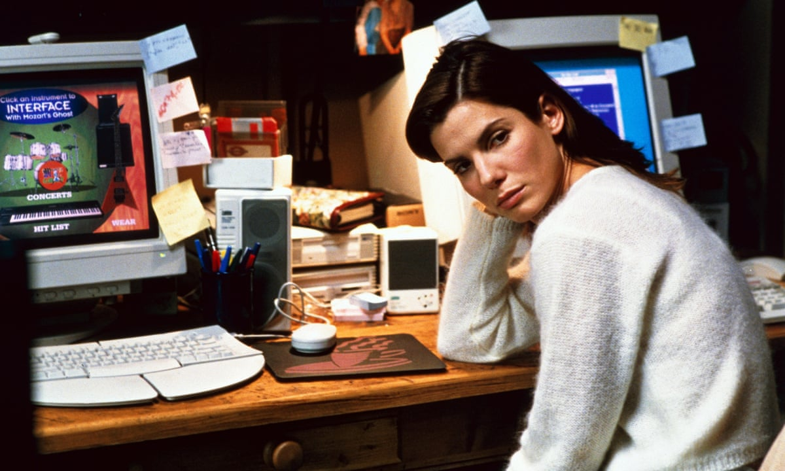

Last week, Regal announced a new AI-powered moviegoing tool—a ChatGPT plugin that lets you ask conversational prompts about what’s playing nearby, receive real-time showtimes, and get directed to Regal’s website to complete your purchase. Regal’s chief digital officer called it an effort to “improve the moviegoer journey.” The Boxoffice Company, which built the thing, described it as turning “AI conversations into movie tickets.”
It doesn’t invite the same tricks as Wendy’s AI drive-thru service, where customers request 1,000,000 burgers, after which a real human immediately intercepts the order. 1,000,000 tickets for The Devil Wears Prada 2 doesn’t really carry the same joy.
Almost as boring as turning an AI conversation into a movie ticket, we now take you through over three decades of “improving the moviegoer journey.”
In the summer of 1995, Sandra Bullock sat down in front of a bulky desktop computer, in a black dress, surrounded by producers and studio people, and bought two movie tickets online. The tickets were for The Net—her own film—at the Egyptian Theatre in Hollywood. Total: $17.70. The website was called MovieLink. It was the first time anyone had ever done this.
“Click for showtimes and tickets to this movie,” she said, reading the screen. Then: “Okay, it’s frozen.” Then, after a few more attempts, it worked. The screen told her to enjoy the show.
“You’re the first one!” someone said.
An Entertainment Tonight crew filmed the whole thing. The clip resurfaced on social media earlier this year, where it briefly went viral. The caption someone added read: “We should simplify the internet again and just start over.”
The stunt was designed to promote a movie about the dangers of the internet. The irony was apparently lost on everyone in the room, or maybe it wasn’t and that was the point, or maybe in 1995 no one had quite developed the part of the brain that processes that kind of irony yet, because the internet was three weeks old. Either way, a woman who was genuinely moved to tears by the act of purchasing a movie ticket on a computer is now a thirty-year-old artifact of a specific window of human history that is gone and not coming back.
The deeper history goes back further. In 1989, a man named Russ Leatherman got frustrated with calling movie theaters and getting a busy signal. His solution was Moviefone—an interactive telephone movie guide, accessible by dialing 777-FILM, staffed by his own voice reading listings he had recorded into a microphone. In its first few years, Moviefone’s fulfillment system consisted of printing customer orders and faxing them to theaters, which were instructed to maintain an alphabetically organized folder at the box office window.
When Beauty and the Beast opened in 1991 and the fax machine at the El Capitan in Hollywood couldn’t keep up, they oversold the theater by three or four times.
Leatherman later said, with some pride: “We introduced credit cards to movies. We were the first online movie guide. We introduced reserve seating to the movies. Truthfully, much of how you get to the movies today is because Moviefone laid that out for you.”
He’s right. Between 1989 and 1997, Moviefone received 150 million calls. In 1996, the first self-service ticket kiosk was installed at Sony Lincoln Square in New York. In 2000, Fandango launched—founded by several major theater chains who wanted, in the words of one CEO, to avoid “positioning a third party between us and our ultimate customer.” By 2001, Harry Potter and the Sorcerer’s Stone had set a Fandango sales record before opening weekend. By 2002, online ticket sales were up 103% year over year. By 2006, you could buy a ticket on your phone and wave a barcode at a scanner. The progression, in retrospect, has a kind of logic to it—each step a practical answer to a genuine problem, each one a little less personal than the last but also a little more convenient, a little more yours to control.
Regal’s press release describes the plugin as “a logical extension” of their existing platform, designed to make the moviegoer journey more efficient. The company says the tool will help make “selecting showtimes, seats and tickets” easier across its circuit. The problem today isn’t selecting a showtime, a seat, or a ticket. It’s feeling any incentive to want to go at all. Some see that as a problem for AI, too.
The ticket stub is a small rectangle of cardstock, torn from a larger ticket by a person whose job it was to tear tickets, handed back to you as proof of admission and kept, by a certain kind of person, as proof that you were there. People collected them in shoeboxes and journals and the front pockets of jeans that went through the wash. The title. The date. The time. The theater. A complete record of everywhere you’d been and everything you’d seen, in the dark, with other people.
AMC named its loyalty program Stubs. This was either a tribute or an accident. The program has, as of 2026, no ticket stubs involved.
Here is an idea that costs almost nothing and would mean quite a lot: at the end of every year, AMC A-List members receive a small package in the mail. Inside, printed on something that feels like it was worth printing on, are all the movies they saw that year. The title. The date. The time. The theater. Not a PDF. Not a year-in-review email with a graphic that says “You watched 47 movies!” A physical object, designed with some care, that functions like a capsule—something you could find in a drawer ten years from now and know exactly where you were and what you were watching and who, possibly, was sitting next to you.
Or perhaps AMC doesn’t want to remind you of how little you go to the movies, or how few of the ones you saw you actually remember.
Sandra Bullock was buying two tickets to a movie she was already in. The Egyptian Theatre was probably a ten-minute drive. She could have called. She could have shown up. Instead she sat in front of a machine that kept freezing, read the instructions off the screen, and felt, when it finally worked, like something had happened.
“I think I’m gonna cry,” she said, after the transaction went through. No one is crying over a ChatGPT plugin.